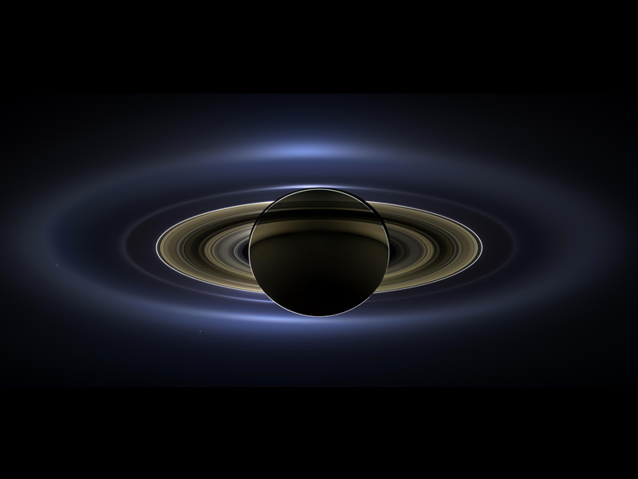

The Milky Way is the Galaxy in which we live. It is a spiral shaped galaxy that contains several hundred billion stars, including our Sun. It is about 100,000 light-years across and about 10,000 light-years thick. If you are at a place which has a very dark night sky, you can sometimes see the Milky Way as a thick band of stars in the sky. We live out in the suburbs of the Milky Way - not near the center, but not near the edge either.
Andromeda Galaxy
Andromeda Galaxy, also called Andromeda Nebula, (catalog numbers NGC 224 and M31), great spiral galaxy in the constellation Andromeda, the nearest large galaxy. The Andromeda Galaxy is one of the few visible to the unaided eye, appearing as a milky blur. It is located about 2,480,000 light-years from Earth; its diameter is approximately 200,000 light-years; and it shares various characteristics with the Milky Way system. It was mentioned as early as 965 CE, in the Book of the Fixed Stars by the Islamic astronomer al-Ṣūfī, and rediscovered in 1612, shortly after the invention of the telescope, by the German astronomer Simon Marius, who said it resembled the light of a candle seen through a horn. For centuries astronomers regarded the Andromeda Galaxy as a component of the Milky Way Galaxy—i.e., as a so-called spiral nebula much like other glowing masses of gas within the local galactic system (hence the misnomer Andromeda Nebula). Only in the 1920s did the American astronomer Edwin Powell Hubble determine conclusively that the Andromeda was in fact a separate galaxy beyond the Milky Way.
Magellanic Clouds
Magellanic Cloud, either of two satellite galaxies of the Milky Way Galaxy, the vast star system of which Earth is a minor component. These companion galaxies were named for the Portuguese navigator Ferdinand Magellan, whose crew discovered them during the first voyage around the world (1519–22). The Magellanic Clouds were recognized early in the 20th century as companion objects to the Milky Way Galaxy. When American astronomer Edwin Hubble established the extragalactic nature of what are now called galaxies, it became plain that the Magellanic Clouds had to be separate systems.
The smallest planet in our solar system and nearest to the Sun, Mercury is only slightly larger than Earth's Moon. From the surface of Mercury, the Sun would appear more than three times as large as it does when viewed from Earth, and the sunlight would be as much as seven times brighter.
Venus
Venus is the second planet from the Sun and is Earth’s closest planetary neighbor. It’s one of the four inner, terrestrial (or rocky) planets, and it’s often called Earth’s twin because it’s similar in size and density. These are not identical twins, however – there are radical differences between the two worlds.
Earth
While Earth is only the fifth largest planet in the solar system, it is the only world in our solar system with liquid water on the surface. Just slightly larger than nearby Venus, Earth is the biggest of the four planets closest to the Sun, all of which are made of rock and metal.
Mars
Mars is the fourth planet from the Sun – a dusty, cold, desert world with a very thin atmosphere. Mars is also a dynamic planet with seasons, polar ice caps, canyons, extinct volcanoes, and evidence that it was even more active in the past.
Jupiter
Jupiter has a long history of surprising scientists – all the way back to 1610 when Galileo Galilei found the first moons beyond Earth. That discovery changed the way we see the universe.
Saturn
Adorned with thousands of beautiful ringlets, Saturn is unique among the planets. It is not the only planet to have rings – made of chunks of ice and rock – but none are as spectacular or as complicated as Saturn's.

Uranus
Uranus is the seventh planet from the Sun, and has the third-largest diameter in our solar system. It was the first planet found with the aid of a telescope, Uranus was discovered in 1781 by astronomer William Herschel, although he originally thought it was either a comet or a star.
Neptune
More than 30 times as far from the Sun as Earth, Neptune is the only planet in our solar system not visible to the naked eye and the first predicted by mathematics before its discovery. In 2011 Neptune completed its first 165-year orbit since its discovery in 1846.
The National Aeronautics and Space Administration is America’s civil space program and the global leader in space exploration. The agency has a diverse workforce of just under 18,000 civil servants, and works with many more U.S. contractors, academia, and international and commercial partners to explore, discover, and expand knowledge for the benefit of humanity. With an annual budget of $23.2 billion in Fiscal Year 2021, which is less than 0.5% of the overall U.S. federal budget, we supports more than 312,000 jobs across the United States, generating more than $64.3 billion in total economic output (Fiscal Year 2019).
At its 20 centers and facilities across the country – and the only National Laboratory in space – we studies Earth, including its climate, our Sun, and our solar system and beyond. We conduct research, testing, and development to advance aeronautics, including electric propulsion and supersonic flight. We develop and fund space technologies that will enable future exploration and benefit life on Earth.
we also leads a Moon to Mars exploration approach, which includes working with U.S. industry, international partners, and academia to develop new technology, and send science research and soon humans to explore the Moon on Artemis missions that will help prepare for human exploration of the Red Planet. In addition to those major missions, the agency shares what it learns so that its information can make life better for people worldwide. For example, companies use we discoveries and technologies to create new products for the public. To ensure future success for the agency and the nation, we also supports education efforts in STEM with an emphasis on increasing diversity in our future